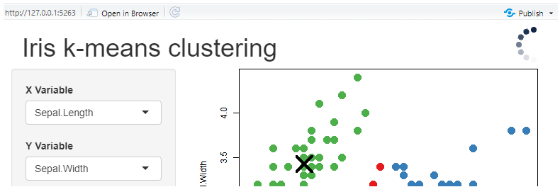
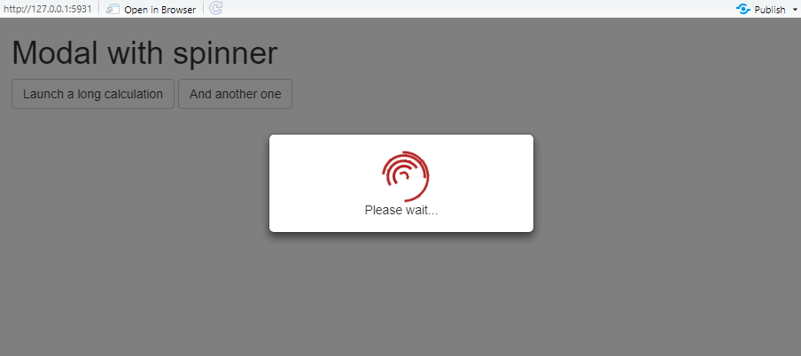
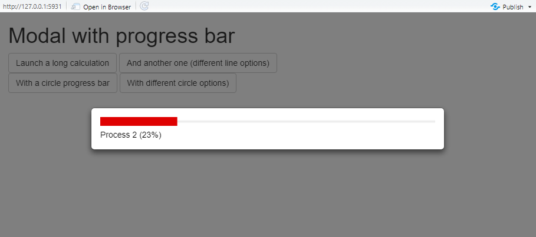

{shinybusy} allow to add global indicators to a {shiny} application to show the user that application is busy (something is happening server-side). There is three main type of indicators :
- automatic, just add a line in UI, the indicator will show up whenever server is busy.
- manual, activate the indicator from the server when you want it to be displayed.
- modal indicators, display a modal and prevent user to interact with the application.
Automatic indicators
The indicator will be displayed each time a calculation take more than the timeout defined (default to 1000ms), you don’t have to intervene in the server.
Three indicators are available :
- a spinner : with
add_busy_spinner().
# Add in UI
add_busy_spinner(spin = "fading-circle")
- a top progress bar : with
add_busy_bar().
add_busy_bar(color = "red", height = "8px")
- a GIF that will animate when app is busy : with :
add_busy_gif().
# Add in UI
add_busy_gif(
src = "https://jeroen.github.io/images/banana.gif",
height = 70, width = 70
)
Manual indicators
The same types of indicators are available than for automatic
indicators, but this time functions starts with use_* and
you have to explicitly trigger the indicator server-side.
- spinner : with
use_busy_spinner():
# in UI
use_busy_spinner(spin = "fading-circle")
# in server
show_spinner() # show the spinner
hide_spinner() # hide the spinner- top progress bar : with
use_busy_bar():
# in UI
use_busy_bar(color = "#01DF01", height = "15px")
# in server
update_busy_bar(0) # update with the desire value [0-100], 100 hide the bar- GIF : with
use_busy_gif():
# in UI
use_busy_gif(
src = "https://jeroen.github.io/images/banana.gif",
height = 70, width = 70
)
# in server
play_gif() # play animation
stop_gif() # stop animationModal indicators
Display an indicator (a spinner or a progress bar) in a modal window, this prevent user to interact with the app and launch other calculation when something is already happening in the server. Those functions are only used server-side.
- Spinner :
# in server
show_modal_spinner() # show the modal window
remove_modal_spinner() # remove it when done
- Progress bar :
# in server
show_modal_progress_line() # show the modal window
update_modal_progress(0.2) # update progress bar value
remove_modal_progress() # remove it when done
Don’t forget to remove the modal window when computation is finished !
Notifications
Show notifications and reports to user through JavaScript library Notiflix. Four appearance are available: success, failure, info and warning. Notifications are fully configurable.
# success notification
notify_success("Well done!")
# report failure
report_failure(
"Oups...",
"Something went wrong"
)